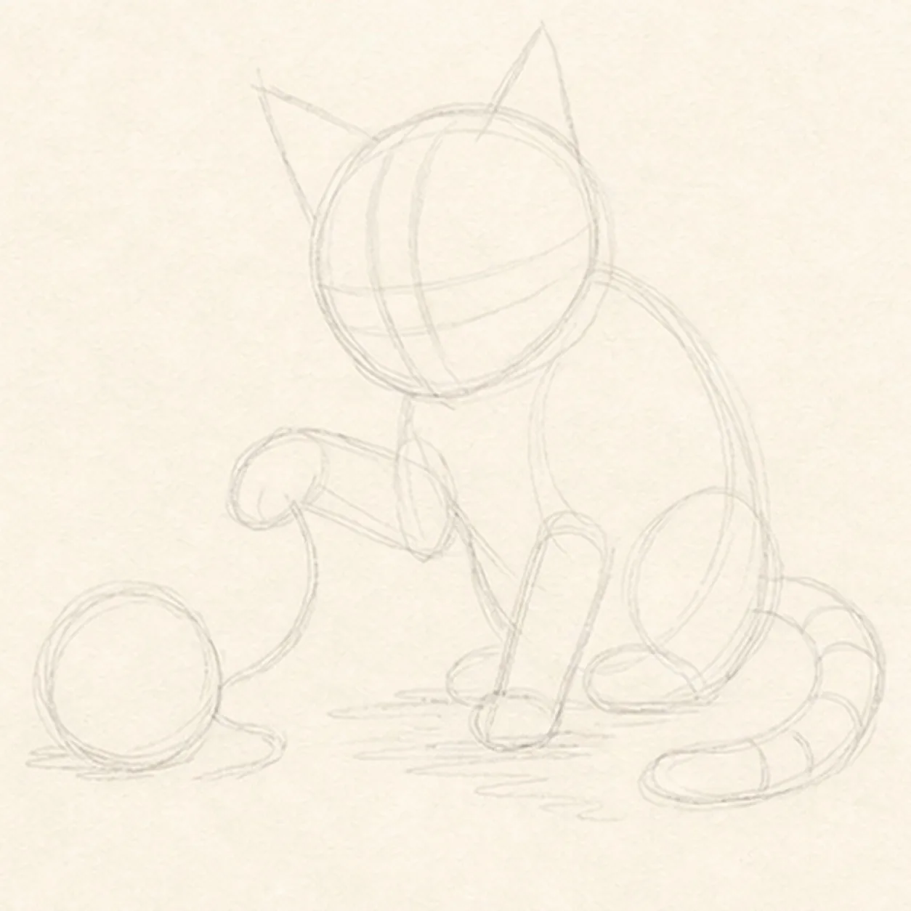
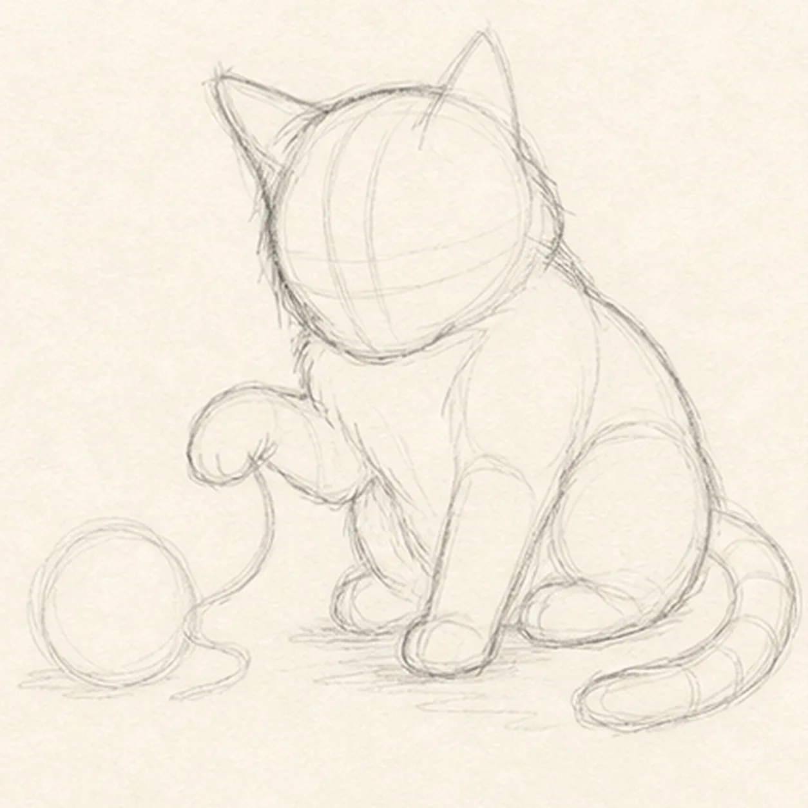
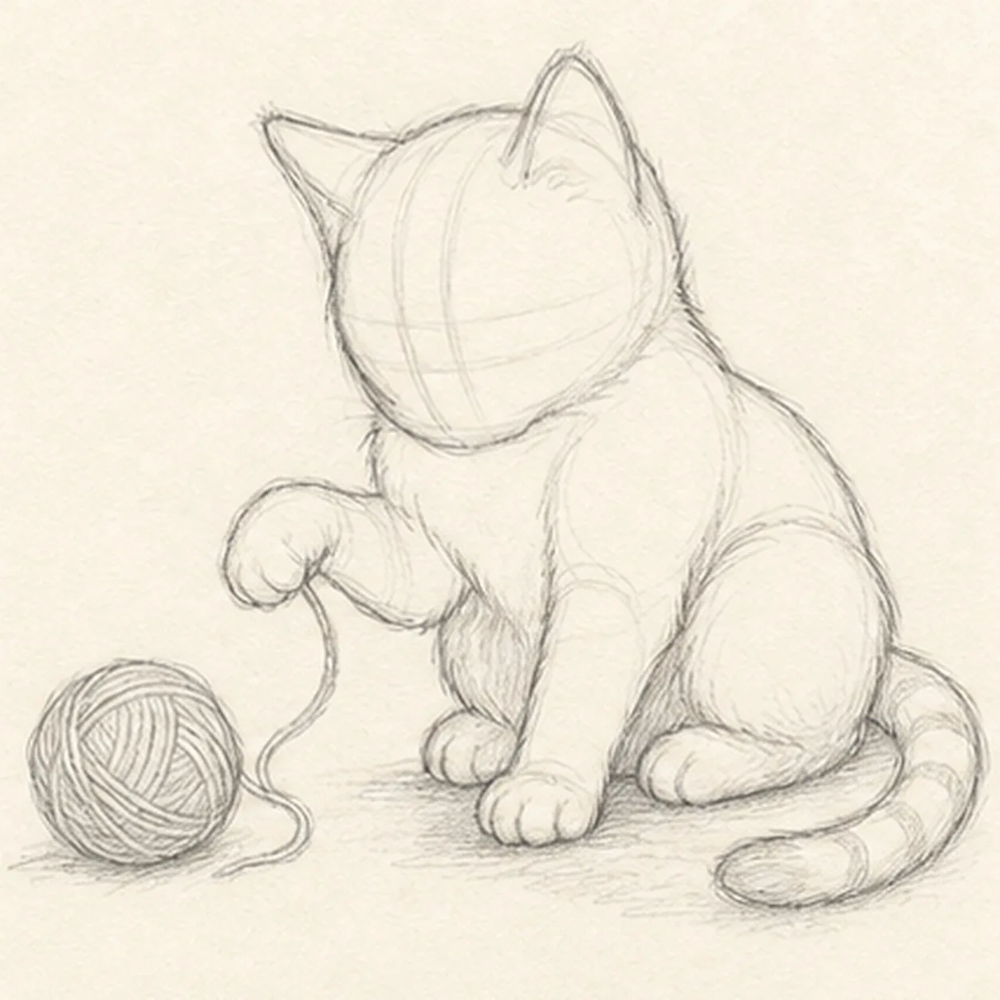
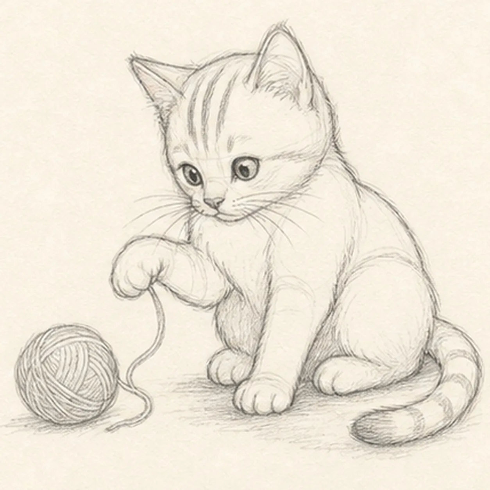
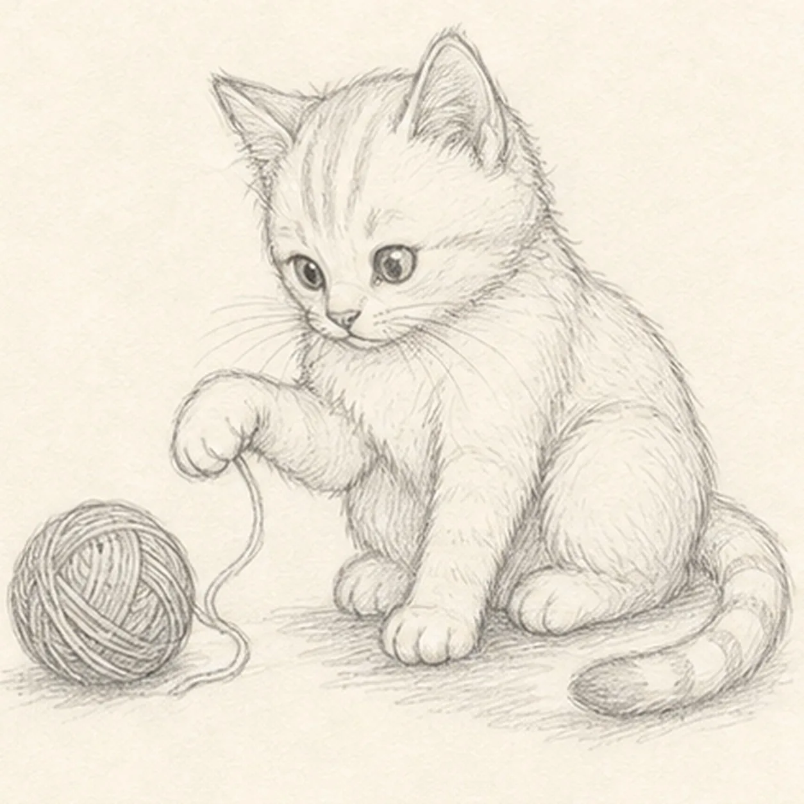
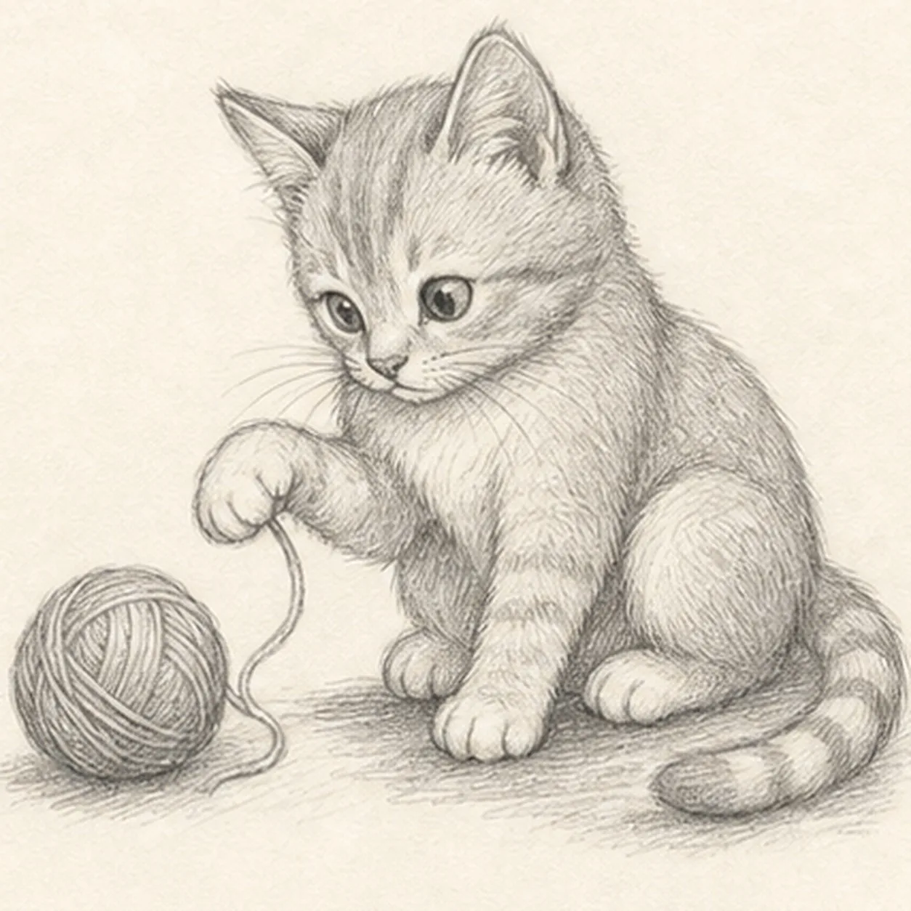
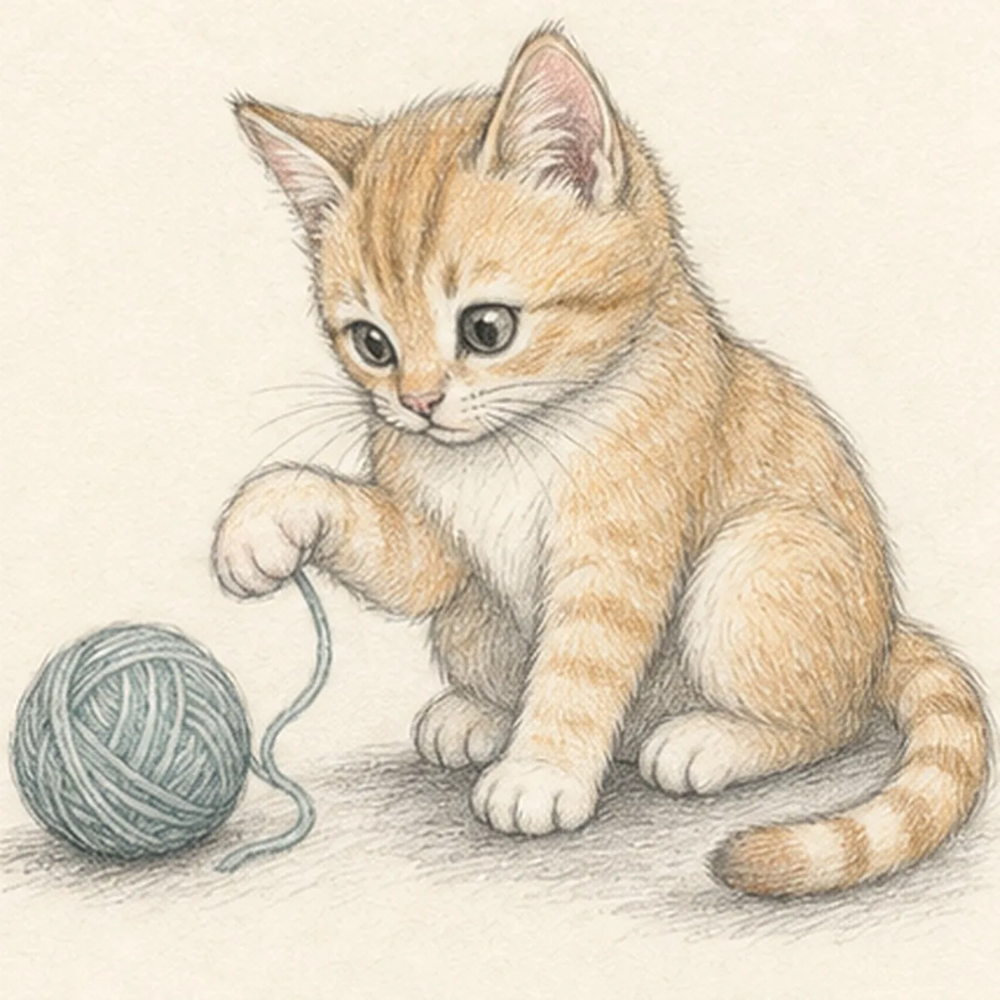

From the archive
Let's draw a kitten batting a ball of yarn
Treat this as one small practice round: build the subject lightly, notice the shapes, then darken only the lines that help the finished sketch.
-
01

Map the playful pose
Use pale graphite to place the tilted head, seated body, exactly two ears, one raised paw, one planted paw, two folded haunches, one curled tail, one yarn-ball circle, the single loose strand, face axes, stripe routes, open highlights, and a broken shadow footprint.
Sketch tip: Ghost the head and body ovals before touching down, then compare the empty triangle between the raised paw, chest, and yarn. Reserve both paws and the full tail curl now so later body lines stop around them instead of becoming marks you must erase.
-
02

Wrap the seated kitten
Add a loose contour for the tilted head, two ears, rounded chest, two folded haunches, raised paw, planted paw, and curled tail while preserving every yarn, face, marking, highlight, and shadow route.
Sketch tip: Simplify the outer contour into a few long arcs instead of drawing fur zigzags immediately. Trace from ear to chest and from haunch to tail with your finger first so the seated weight stays balanced.
-
03

Fit the paws and yarn
Clarify the cheeks, chest, shoulder, haunches, lifted and planted paws, then shape exactly one yarn ball and one loose strand on the reserved routes.
Sketch tip: Build each paw as one soft mitten before adding toes. Stop the chest contour at both front paws, let the strand pass behind only the raised paw, and keep the yarn ball far enough left that the kitten still has breathing room.
-
04

Aim the curious face
Add two wide eyes focused on the yarn, one small nose, a short curious mouth, whisker routes, exactly three forehead stripes, and exactly three unfilled tail-band guides.
Sketch tip: Place both pupils before darkening either one and check their aim against the yarn ball. Keep the nose close to the eye line and use three broad stripe shapes instead of many tiny marks so the expression remains readable.
-
05

Add fur and yarn texture
Place sparse fur groups along the cheeks, chest, haunches, and tail, curve yarn loops around the established ball, add small paw creases, preserve open paper highlights, and establish the broken ground shadow.
Sketch tip: Pull fur marks in the direction each form grows and leave quiet paper between clusters. Wrap the yarn lines around the ball like latitude curves; avoid crossing the outer edge or filling every gap.
-
06

Build the soft graphite values
Layer directional graphite hatching over the established kitten, paws, tail, yarn, and shadow while keeping the eyes, tabby routes, yarn loops, and paper highlights clear.
Sketch tip: Use the side of the 2B pencil for the broad chest and haunch values, then turn to the point for short fur accents. Save the darkest graphite for the pupils, paw overlap, tail bands, and the small contact shadows under the body.
-
07

Layer the playful color
Add restrained warm ginger to the kitten, dusty teal to the yarn, rose to both ear interiors and the nose, and warm gray to the established shadow while preserving graphite texture and open paper highlights.
Sketch tip: Pull the ginger pencil with the fur direction and the teal around the yarn loops. Build two light layers instead of one waxy pass, and leave the muzzle, chest, paws, and eye highlights mostly open paper.
-
08
![Handmade graphite and restrained colored-pencil sketch of one warm-ginger kitten seated in a three-quarter pose facing page left with exactly two triangular ears, two wide eyes focused on one dusty-teal yarn ball, one front paw raised over one loose strand, one front paw planted, two folded hind haunches, one curled tail with three broad tabby bands and a darker tip, three forehead stripes, sparse whiskers, tactile directional fur hatching, rose ear interiors and nose, open paper highlights, and one broken warm-gray ground shadow](../assets/kitten-batting-a-ball-of-yarn-finished-v1.webp)
Settle the playful kitten finish
Strengthen selected established contours, deepen the same graphite and colored-pencil texture, clarify the eyes and paper highlights, and soften only the pale guides that distract.
Sketch tip: Count two ears, one raised paw, one planted paw, two haunches, one curled tail, one yarn ball, one strand, three forehead stripes, and three tail bands, then stop. Change the kitten or yarn colors in your own sketch, but keep the pose and overlap order useful.

![Handmade graphite and restrained colored-pencil sketch of one diagonal shooting star with a small warm-yellow round head on the page right and exactly two tapered yellow wake bands trailing toward the upper left, exactly three small open-paper sky stars, two layered indigo-blue hill ridges, exactly five dark foreground pine trees in varied heights, dense directional graphite night-sky hatching, open warm-paper glow around the meteor and stars, broken rock-and-grass foreground texture, and visible pencil tooth](../assets/shooting-star-over-pine-hills-finished-v1.webp)
![Handmade graphite and restrained colored-pencil sketch of one generic face-free school bus in a front-left three-quarter view with one broad dark windshield, one folding entry-door window, exactly four receding side passenger windows, exactly two visible wheels, two headlights, exactly three muted-red roof marker lamps, one side mirror, two dark horizontal safety bands, one simple front grille and bumper, several small panel seams, tactile directional hatching, school-bus-yellow body color, cool-gray glass and wheel values, open paper highlights, and one broken graphite ground shadow](../assets/school-bus-three-quarter-view-finished-v1.webp)